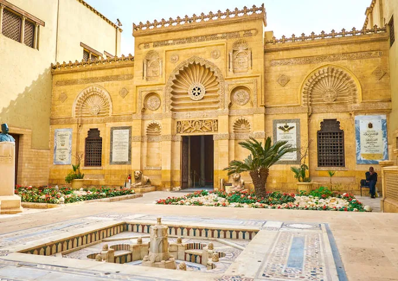
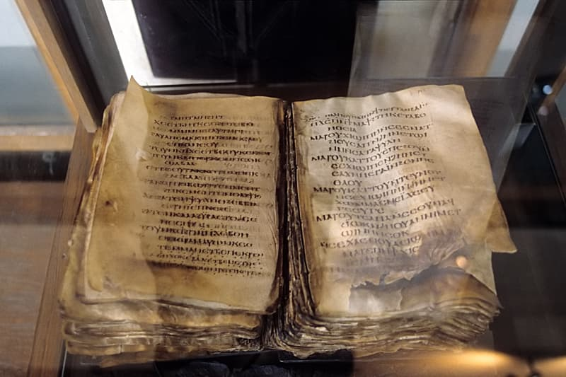
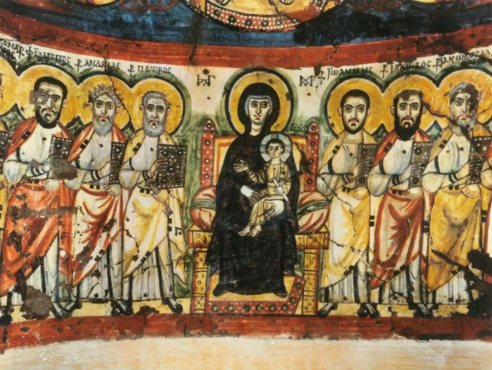
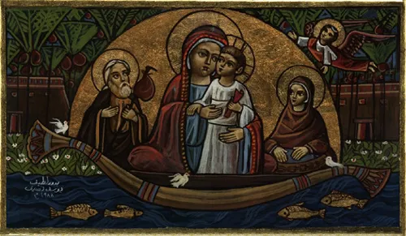
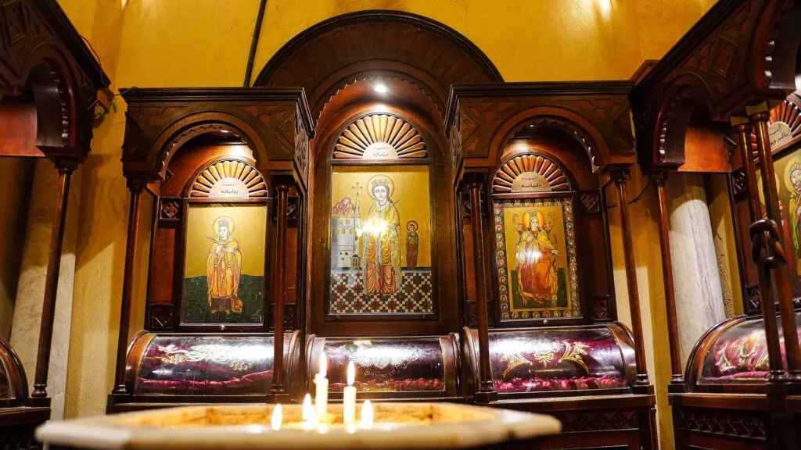
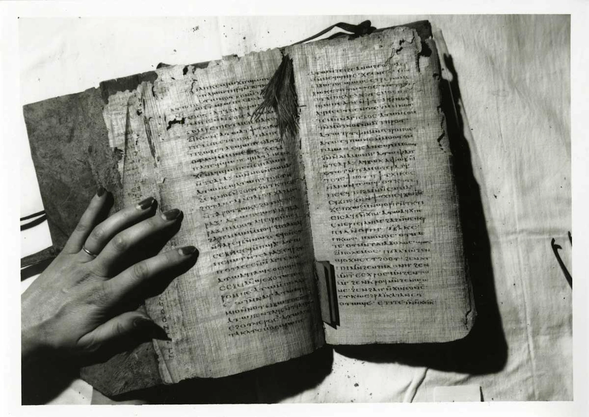
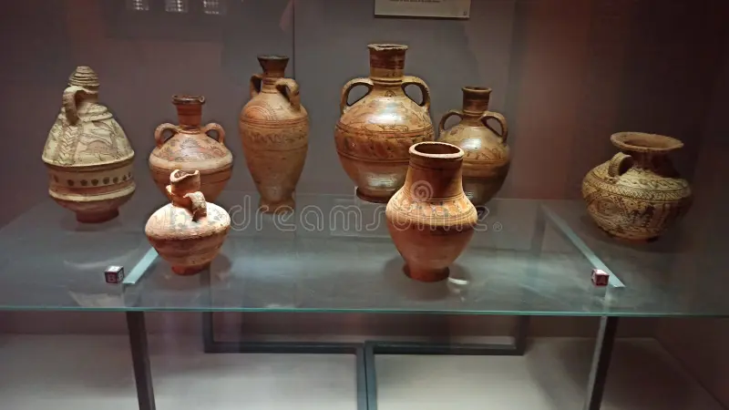

Coptic Museum
Its holdings
include rare manuscripts like the Psalms of David, intricate woodwork, frescoes, and textiles that blend
pharaonic, greek, and islamic influences.
Located within the ancient Babylon fortress, the museum
offers
a unique window into Egypts rich christian heritage.

Psalms of David
Among the most precious holding; the oldest complete copy of the book Psalms in coptic language, housed in a separate hall.

Ambo of Alba Jeremiah
A rare wooden piece dating back to the 6th century AD, brought from the monastery of Alba Jeremiah in saqqara

Bawit Sanctuary
A fresco depicting the virgin Mary and christ, transferred from the monastery of Ala Apollo in Bawit

Icon of the Holy Journey
Depicts the holy familys flight into Egypt, one of the most famous icons reflecting Egypts christian heritage

Door of ST.Barbaras Church
Made of sycamore wood, a masterpiece from the fatimid era(11th-12th century AD)

Nag Hammadi Manuscripts
Original copies or parts thereof important gnostic texts written on papyrus
.jfif)
The Four Gospels
Manuscripts witten in coptic and arabic side by side, reflecting the period of arabization in Egypt

Akhmim Textiles
Rare pieces known for their colorful threads and natural colors that have lasted for thousands of years

Coptic Vessels
Cups and trays used in processions, dating to various periods
| Ticket Price | |
|---|---|
| Egyptian | 100 E.L |
| Arab | 350 E.L |
| Other Nationality | 400 E.L |